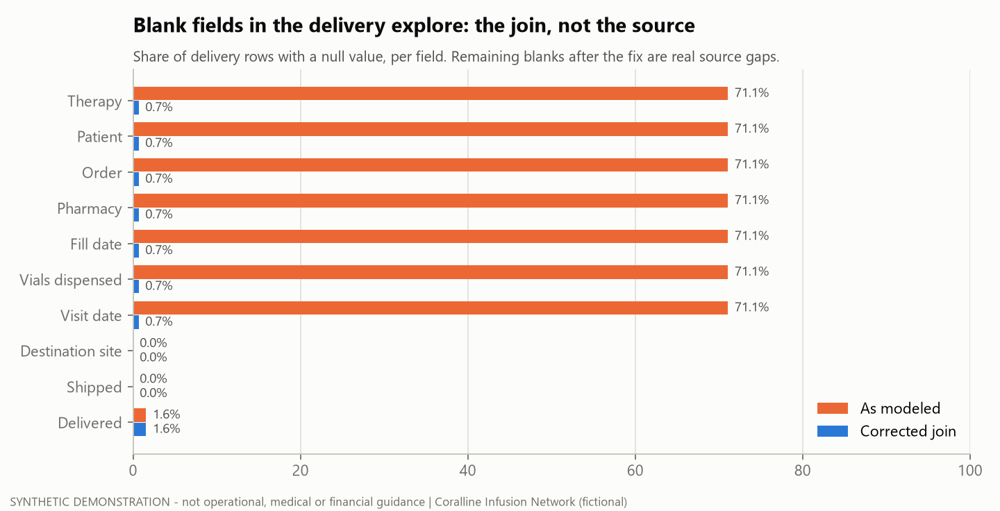

SYNTHETIC DEMONSTRATION - not operational, medical or financial guidance. Fictional BI model, fictional specialty-pharmacy feed and generated data (seed
20261024). Short micro-case, written as a postmortem.
Read: ISSUE_TICKET.md - the escalation as it would be sent, with reproduction steps and evidence.

Situation
Users of a delivery explore (specialty-pharmacy shipments to infusion sites) reported that Therapy, Patient and Visit date were blank on most rows. The obvious guess was that the pharmacy feed had stopped sending them.
What went wrong
Nothing was missing from the source. Every blank field reached the explore through one join:
delivery_tickets.fill_ref = prescriptions.rx_key. The pharmacy types an original fill as RX0012 and refill n as
RX0012-R3. Refills never matched, so 317 of 446 rows (71%) lost every field behind that join.
flowchart LR
T["delivery_tickets.fill_ref<br/>RX0012 / RX0012-R3"] -- "as modeled: = rx_key<br/>(refills never match)" --> RX[prescriptions]
T -- "corrected: parse to rx_key + fill_number" --> F[rx_fills]
F --> RX
F --> A[appointments]
RX --> TH["Therapy, Patient, Order, Pharmacy"]
F --> FD["Fill date, Vials"]
A --> V["Visit date, Visit site"]
Investigation
- Field lineage: traced each blank field back to its source column and the join it depends on. All of them shared the same join.
- Null-coverage audit: measured the share of rows with a null value for each field in the explore as modeled (
outputs/null_coverage.csv). The rate was about the same in every full month (69-73%), so this was a modeling gap from day one, not a recent feed break. - Rejected the quick fix:
LIKE rx_key || '%'plus a join onrx_keyalone fills the blanks by attaching every fill to every ticket: 1,329 rows for 446 tickets (3.0x), with wrong visit dates (sql/02_quick_fix.sql). - Corrected join: parse the reference, then join the fill on
rx_key+fill_number. That gives exactly one row per ticket (sql/03_corrected.sql).
Fix and what was left
| As modeled | Corrected | |
|---|---|---|
| Rows / tickets | 446 / 446 | 446 / 446 |
| Therapy, patient, order, visit blank | 71.1% | 0.7% |
| Delivered time blank | 1.6% | 1.6% |
After the model fix, the remaining problems are source issues for the pharmacy-feed owner (outputs/source_issues.csv):
- 3 fill references that match no fill even after parsing (
RXO073-R1with a letter O, andRX0086-2Rwith the suffix typed backwards). - 4 tickets marked Delivered with no delivered time.
- 2 tickets shipped to a different site than the visit. This only became visible once the join worked.
Three more blank delivered times are not issues: those shipments were still in transit at the snapshot.
Evidence
python tier3/08_field_lineage_escalation/run.pyrebuilds every output, the chart and the ticket.tests/test_t08_lineage.pyhas 6 tests:- The corrected join is 1:1, and the quick fix fans out.
- The as-modeled blanks are exactly the non-bare references.
- Every leftover issue is a defect planted in the ground-truth register (
DELIVERY_*). - Every corrected row points at the right fill.
Lessons
- A blank field is a question about lineage before it is a question about the source.
- Measure null coverage per field before and after a fix. Whatever survives the fix is the real data-quality list.
- Reject fixes that remove nulls by multiplying rows. Check row counts against the grain of the base table.
- Escalate with reproduction steps, the expected-vs-actual table, the root cause and a tested fix, and split model issues from source issues by owner.
Real vs built
| On-the-job exposure (general terms) | Investigated field availability in a pharmacy-delivery explore and drafted a support request documenting the issue. |
| Built here | The synthetic pharmacy tables (generator v1.1.0), the three joins, the null-coverage audit, the ticket and the tests. The fix was never applied to any real model. |